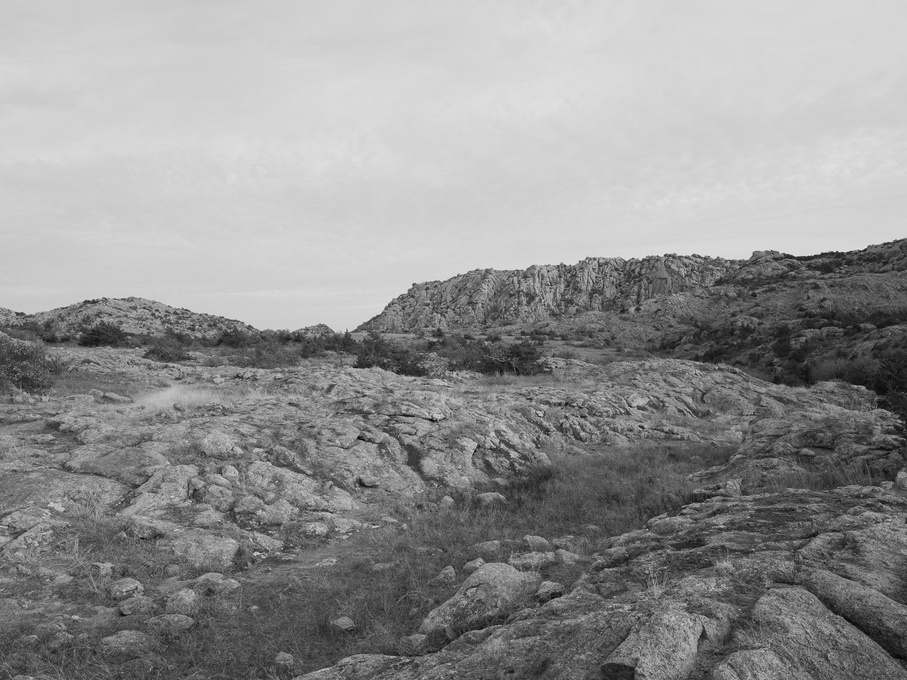
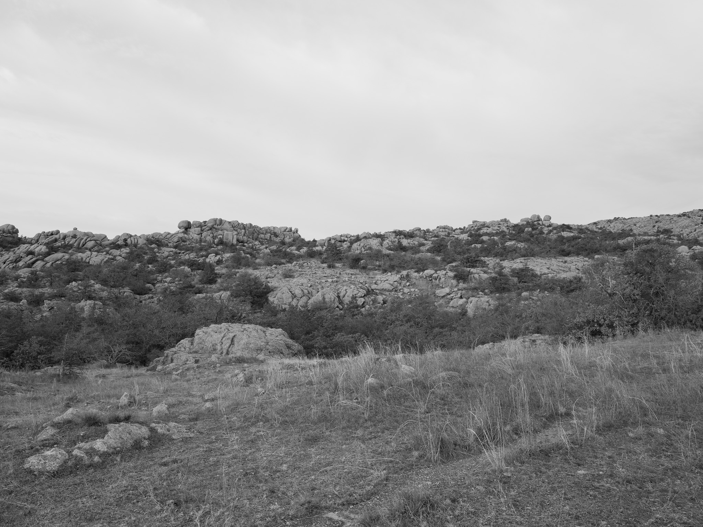

Geological age ~525 million years ago (bedrock)
Epoch Cambrian period; Furongian epoch; among the oldest exposed rock in the southern Great Plains; basement exhumed through erosion of overlying Paleozoic and Mesozoic cover
Taxa 388 plants, 167 birds, 552 insects, 22 mammals, 27 fungi, 38 reptiles, 10 amphibians, 34 arachnids
Most observed Eastern Collared Lizard (Crotaphytus collaris) (Bison bison) (Echinocereus reichenbachii) (Cynomys ludovicianus) (Sceloporus consobrinus)
Native lands Comanche (Nʉmʉnʉʉ) · Kiowa · Wichita (Kitikiti'sh) · Apache; Wichita Mountains used as refuge and gathering ground; Comanche and Kiowa held this territory until Kiowa-Comanche-Apache Reservation established 1867
Displacement & Tenure Cession 510: Treaty with the Kiowa, Comanche, and Apache (Medicine Lodge Creek, 1867); Cession 485: Agreement with the Comanche, Kiowa, and Apache (Jerome Agreement, 1892, ratified 1900); Congress carved 61,500 acres directly out of the Kiowa-Comanche-Apache Reservation as the Wichita Forest Reserve on July 4, 1901; the 5,723-acre wilderness was designated under the Wilderness Act of 1964; the broader 8,570-acre Wichita Mountains Wilderness designated by Congress in 1970.
Shadow History The Quanah Artillery Range (15,850 acres), operational since 1957 along the Wichita Mountains NWR's southern boundary and named for Quanah Parker, used weapons including Honest John missiles; a 3,800-acre buffer strip separating the refuge from Fort Sill remains closed to the public; a 1950s Army effort to annex 10,500 acres of the southern refuge as a missile range was resolved as a joint-use arrangement with title retained by the Department of the Interior; whether the artillery buffer zone borders the Charon's Garden sub-unit specifically has not been confirmed in accessible public sources.
Ecology Mixed-grass prairie; post oak savanna; granite outcrop community; federally listed black-capped vireo habitat; no mechanized access
Hydrology Ephemeral streams draining granite uplands; vernal pools in boulder depressions; no permanent surface water
Acreage 5,723 acres
GPS 34.7260° N, 98.6880° W

Charon's Garden Wilderness Area I · 2026-01-07
_DSF0602.jpg
Charon's Garden Wilderness Area II · 2026-01-07
_DSF0607.jpg
Charon's Garden Wilderness Area III · 2026-01-07
_DSF0615.jpg

Charon's Garden Wilderness Area IV · 2026-01-07
_DSF0620.jpg
← Elephant Rocks State Park
Wichita Mountains National Wildlife Refuge →
Public Lands Institute — ongoing project
CC0 Public Domain